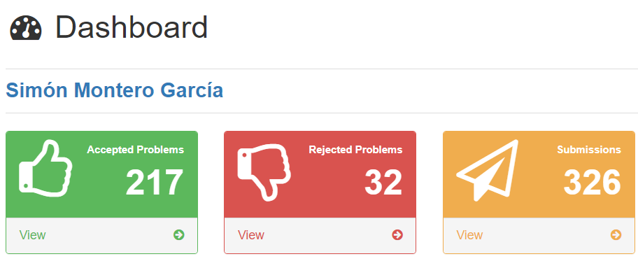
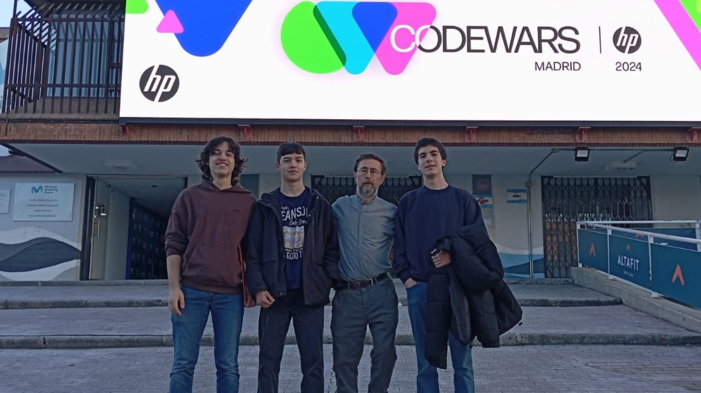
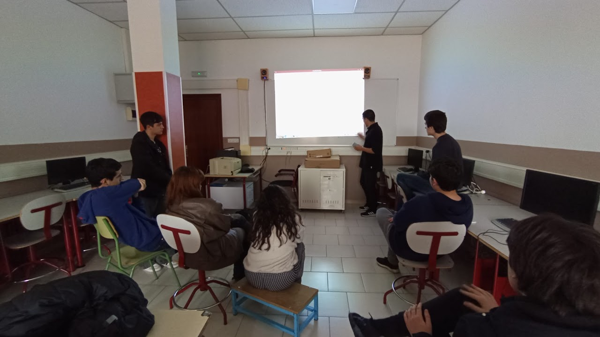
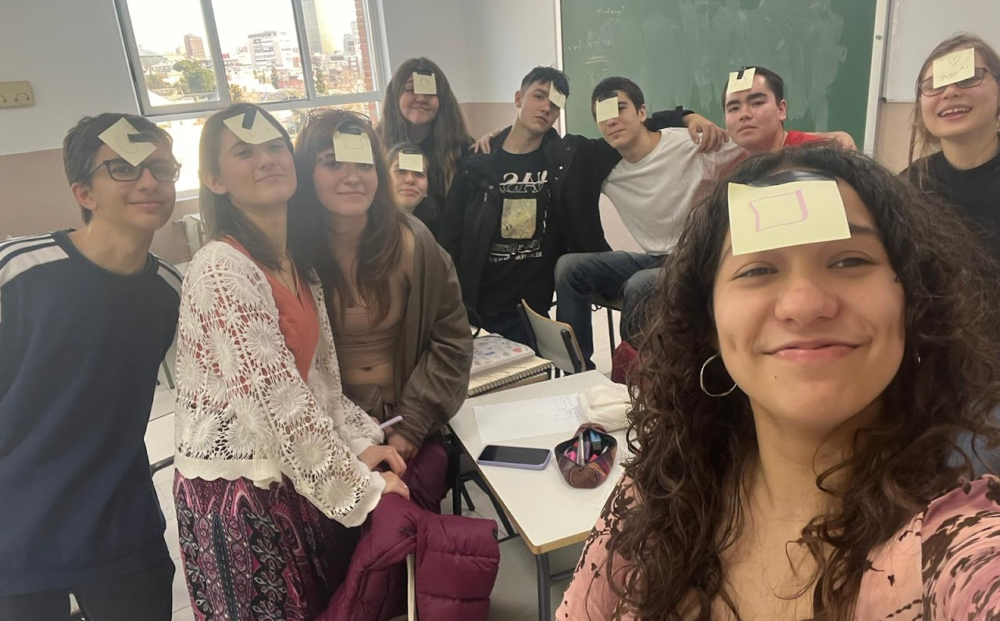
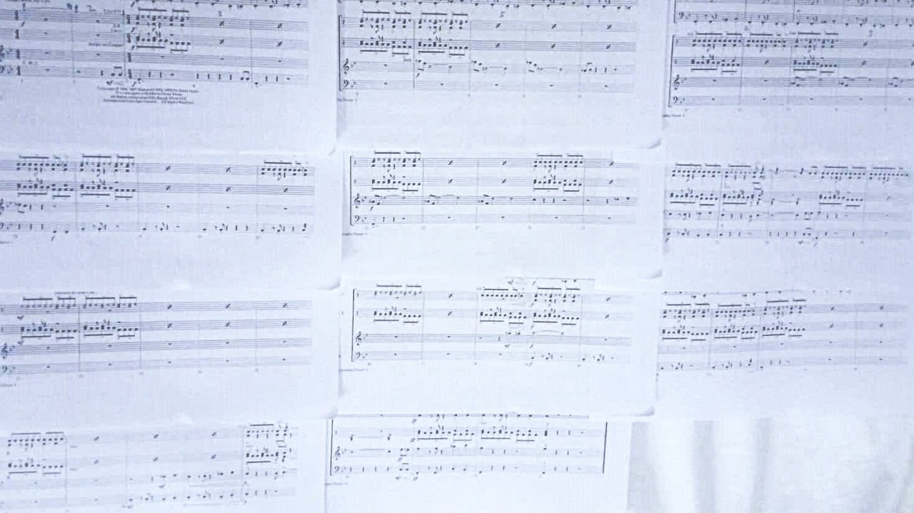
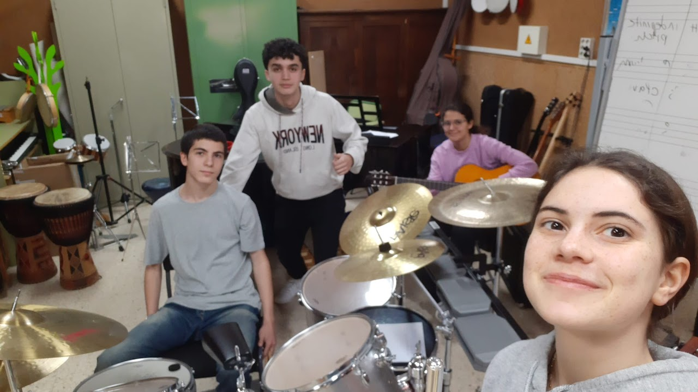

ProgramaciónDesde que empecé la ESO he estado programando en diferentes lenguajes, y lo disfruto mucho, tanto resolver problemas pensados por otros como crear mis propios proyectos. Ahora mismo me dedico a tres actividades de programación: doy clases de Python a otros estudiantes en un taller llamado Sui Generis, resuelvo problemas en una web llamada Jutge, practicando para el concurso anual de Code Wars, y programo mis propios proyectos, he construido algoritmos y páginas web (como esta), pero casi siempre programo juegos. |
|---|
|  Mi perfil de Jutge, la web que más uso para practicar problemas. |
 Antes del concurso Code Wars. |
|---|---|
|  La clase de Sui Generis, que impartimos los lunes de 4 a 5:30. |
Grabación de un juego Rogue-like de terminal. |
Seminario dde MatemáticasTambién llevo con compañeros un seminario de matemáticas, organizamos sesiones semanales los jueves de 4 a 5:30. Solemos ver problemas y contenidos de matemáticas un poco más complicados de lo que se trata en clase, cogiendo problemas de olimpiadas matemáticas y otros recursos online. Aunque la resolución de los problemas es única para cada persona, es difícil considerarla intrínsecamente creativa, sobre todo a los niveles del seminario. Sin embargo, los coordinadores tenemos que investigar problemas, estudiarlos y a partir de ellos crear nuestras versiones e idear problemas nuevos para poder enseñarlos en el seminario. Preparando los seminarios, rara vez copio un problema directamente, sino que los modifico para simplificarlos o añadirles interés, los combino o añado partes, incluso muchos de los problemas los he ideado yo, lo cual creo que sí requiere creatividad. |
||||||||||||||||||||
|---|---|---|---|---|---|---|---|---|---|---|---|---|---|---|---|---|---|---|---|---|
Arriba están algunos de los seminarios que he preparado, concretamente mi primer seminario, mi tercero y mi quinto. Van mejorando, los problemas siempre los he modificado y preparado yo, pero cada vez he aprendido a hacerlos mejor, mantener las partes que van a interesar más a los asistentes y retirar lo más procedural, y los problemas son cada vez más originales y más míos (el problema 1 del segundo y el problema 2 del primero están totalmente pensados por mí). En el segundo trimestre, los coordinadores decidimos que para hacer más interesantes y entretenidos los seminarios deberíamos inventar historias para los enunciados, práctica que faltaba en mi primer seminario, pero ha ido mejorando y generalizandose hasta el punto de ser la norma, e incluso referenciar en los enunciados problemas de sesiones previas. |
 En una de las sesiones, tras un problema de teoría de juegos con los asistentes como fichas. |
|||||||||||||||||||
El próximo curso queremos mejorar aún más los seminaroios, hacer su organización más colaborativa para retirar carga de quien lo lleve cada semana y repartirla entre los coordinadores, y posiblemente aumentar la dificultad y el apartado teórico. |
||||||||||||||||||||
Conjunto Instrumental Llevo tocando la batería desde los 7 años, una hora de clase a la semana y unas 2 horas de práctica en casa. Al empezar el bachillerato dejé las clases porque quería dejar de estudiar teoría y centrarme en aprender ritmos de canciones y componer los míos propios. He estado ocupado con los estudios y no he podido tocar o componer tanto como me gustaría, pero sí he participado en un conjunto instrumental de mi instituto. |
||||||||||||||||||||
|---|---|---|---|---|---|---|---|---|---|---|---|---|---|---|---|---|---|---|---|---|
|  Mis partituras para el tema principal de Misión imposible, que hemos tocado en el conjunto. |
 Algunos de los integrantes del conjunto. |
|||||||||||||||||||